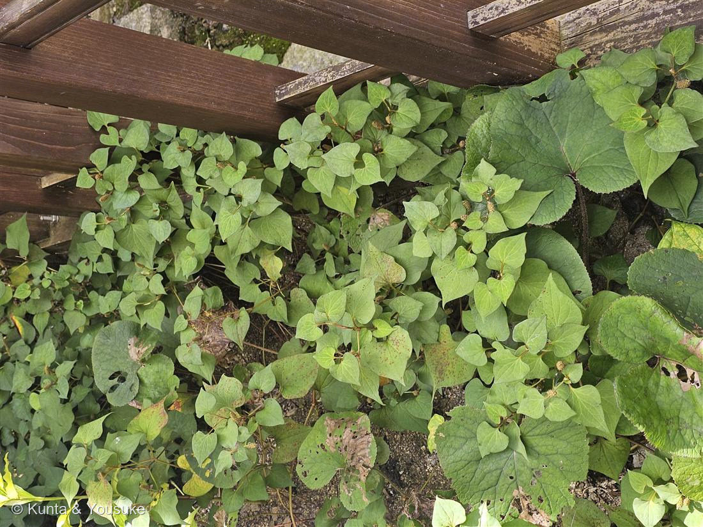

ドクダミ
Houttuynia cordata Thunb.
別名 · ジュウヤク（十薬）
ドクダミ科 · Saururaceae（ドクダミ属）
名前の由来
- Houttuynia（ハウツイニア）＝オランダの博物学者 マルティン・ハウツイン（Maarten Houttuyn）への献名。
- cordata（コルダータ）＝ラテン語で「心臓形の」。まさにハート型の葉にちなむ（燻太さんが見つけた、あのかわいい形）。
- 和名ドクダミ＝「毒を矯（た）める（＝抑える）」に由来するといわれる。別名十薬（じゅうやく）は、たくさんの薬効があることから。
この植物のこと
- ドクダミ科ドクダミ属の多年草。日陰の湿ったところに、地下茎でぐんぐん広がって群生する。この子も柵の下いっぱいに広がっていた。
- 初夏に咲く白い“花びら”は、実は4枚の総苞（そうほう）で、本当の花は中央の黄色い穂。写真では花は終わって、茶色い穂だけ残っている。
- ⭐なぜ総苞を白くするのか——ドクダミ科の花には、花弁も萼もないから。そのままでは虫の目に留まらない。だから別のものを白くして、看板にする。
→ 同じ科の No.042 ハンゲショウ は、総苞ではなく「葉」を白くした（しかも半分だけ、そして花が終わると緑に戻す）。同じ科の、同じ困りごとへの、ちがう答え。 - あの独特の匂いの正体は、デカノイルアセトアルデヒドという抗菌成分。つまり匂いこそが薬効——別名「十薬」のゆえん。乾かしたり加熱したりすると匂いはやわらぎ、ドクダミ茶になったり、ベトナムでは生でも食べられる（ザウザップ）。
- 「臭いといわれるけど、そこまでひどくない」——燻太さんのこの感覚、じつは的を射ていて、慣れると平気だったり、薬効の香りとして好む人も多いんだ。
- No.014 ニゲラを登録したときの「おまけ植物」だった子。ついに出会えて、みつけた✓。